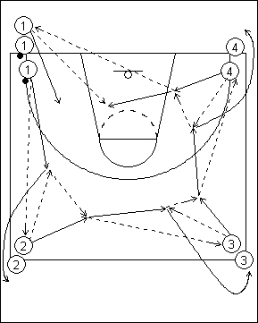

Catégorie : PASSES (Pas-002)Déroulement
- Quatre files. Les deux premiers joueurs de la file 1 possèdent un ballon.
- Le premier joueur de la file 1 passe au premier de 2 qui lui remet le ballon. 2 s’avance et reçoit le même ballon qu’il transmet au premier joueur de la file 3. Celui-ci lui rend le ballon et l’appelle à nouveau pour le céder au premier joueur de la file 4, et ainsi de suite.
- Chaque joueur avance au coin suivant, donc 1 va en 2, 2 en 3, 3 en 4 et 4 en 1.
Coaching points
- Au début, mettre un seul ballon en jeu. Quand le drill est assimilé, ajouter un deuxième ballon dans la file 1. Ce deuxième ballon est passé quand le premier est parvenu au premier joueur de la file 3. Varier les types de passes.
- Extension : on peut terminer chaque parcours par un lay-up ou un jump shoot de 3, avec rebond de 4.